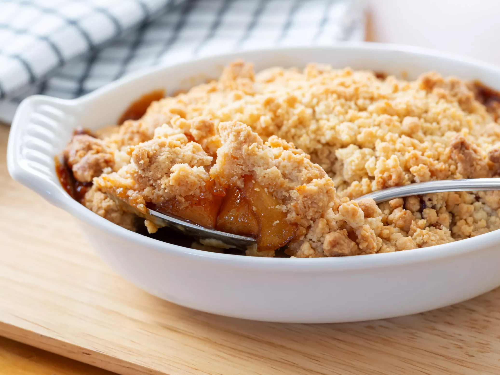

Apple Crumble
Home

This is a picture of Delicious Apple Crumble, the kind you'lle learn to make in this page.
Description
For many, apple crumble is a beloved favourite. The sweetness of the fruit, the crunchynesss of the crumble, or maybe your favorite part is the fusion of the two.
Ingredients
Apple Filling
- 5 apples, peeled, cored, and sliced (≈800 g total, depending on size)
- 30 g granulated sugar
- 6 g vanilla extract
- 19 g lemon juice
Crumble Topping
- 120 g all-purpose flour
- 63 g granulated sugar
- 3 g baking powder
- A pinch of salt (≈1 g)
- 70 g cold butter, cubed
- 18 g olive oil
Chocolate Drizzle
If you're craving something extra sweet, then adding a little chocolate might be the right thing for you.
- 30–40 g chocolate (dark or milk), melted
Instructions
- Preheat your oven to 180°C.
- In a large bowl, toss the sliced apples with 30 g sugar, 6 g vanilla extract, and 19 g lemon juice.
- Transfer the apple mixture evenly into a lightly greased baking dish.
- In a separate bowl, whisk together 120 g flour, 63 g sugar, 3 g baking powder, and the pinch of salt.
- Add the cubed butter.
- Using your fingertips, gently rub the butter into the dry ingredients until the mixture resembles coarse crumbs.
- Drizzle in 18 g olive oil and give it a light stir until just combined.
- Evenly sprinkle the crumble topping over the apples.
- Bake in the preheated oven for 35–40 minutes, or until the topping is golden and the apples are tender and bubbly.
- If you like, melt 30–40 g chocolate (using a microwave or double boiler) and drizzle it over the warm crumble just before serving.
Enjoy!
Enjoy your apple crumble warm—perfect on its own or with a scoop of ice cream!
Enjoy your homemade treat!